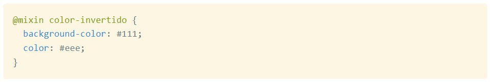
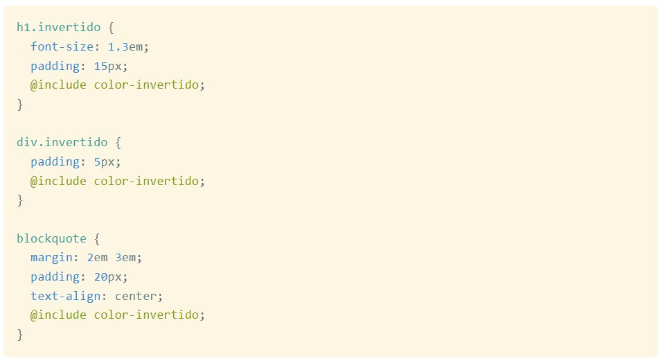

<div class="wrap">
    <mat-card>
        <mat-card-header>
            <div mat-card-avatar class="icon_avatar">
                <mat-icon>{{cardHead.icon}}</mat-icon>
            </div>
            <mat-card-title>{{cardHead.title}}</mat-card-title>
            <mat-card-subtitle>{{cardHead.subtitle}}</mat-card-subtitle>
        </mat-card-header>
        <mat-card-content>
            <p>
                Se recomienda el uso de variables y de mixins, para facilitar la reutilización de los estilos a lo largo
                de toda la plataforma. Asi mismo, se recomienda el uso de estilos globales en la hoja de estilos
                principal con la finalidad de facilitar la edición de estilos.
            </p>
            <div class="sectionSubtitle">Variables</div>
            <p>
                Las variables son, como en los lenguajes de programación tradicionales, capaces de almacenar un dato,
                que luego podremos usar las veces que haga falta a lo largo de todo nuestro código Sass.
            </p>
            <p>
                Las variables se definen igual que otros atributos CSS, solo que no están ligados a un selector en
                concreto. Además, en Sass o Scss las variables comienzan siempre con el caracter "$".
            </p>
            <p>
                Para declarar una variable se hace de la siguiente manera:
            </p>
            <mat-card-content>
                <div class="mapImg">
                    
                </div>
            </mat-card-content>

            <p>
                Luego, se debe exportar y al momento de declarar una propiedad se realiza de la siguiente manera:
            </p>

            <mat-card-content>
                <div class="mapImg">
                    
                </div>
            </mat-card-content>

            <div class="sectionSubtitle">Mixins</div>
            <p>
                La utilidad de los mixin es la de permitir al desarrollador escribir menos código, ya que por medio de
                su procesamiento y el envío de parámetros, los mixins pueden producir salida variada solamente con
                invocarlos. Al pasarle parámetros distintos podremos obtener varias salidas personalizadas a nuestras
                necesidades, con un mismo mixin de base. Pero esa no es la principal ventaja. Realmente lo más
                interesante es producir un código más claro, más expresivo y sobre todo con mayor facilidad de
                mantenimiento.
            </p>
            <p>
                Para definir un mixin tenemos que comenzar a declararlos con la cadena "@mixin", seguido por el nombre
                del mixin que estamos generando y unas llaves para englobar su código.
                <br>
                Aquí tenemos un primer ejemplo de mixin:
            </p>
            <mat-card-content>
                <div class="mapImg">
                    
                </div>
            </mat-card-content>

            <p>
                Ahora veamos cómo llamar ese mixin Sass para producir una salida. Es tan sencillo como escribir
                "@include" seguido del nombre del mixin que queremos invocar.
                <br>
                Por ejemplo, dado el mixin anterior, "color-invertido", podríamos tener diversos elementos de la página
                a los que querríamos aplicar esas propiedades. En vez de copiar y pegar todo el tiempo los mismos
                valores, invocamos el mixin.
            </p>
            <mat-card-content>
                <div class="mapImg">
                    
                </div>
            </mat-card-content>

        </mat-card-content>
    </mat-card>
</div>